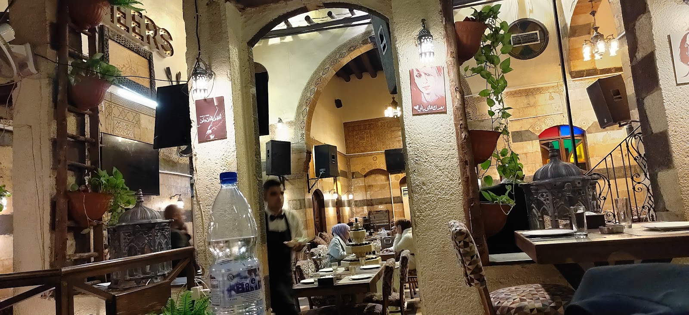
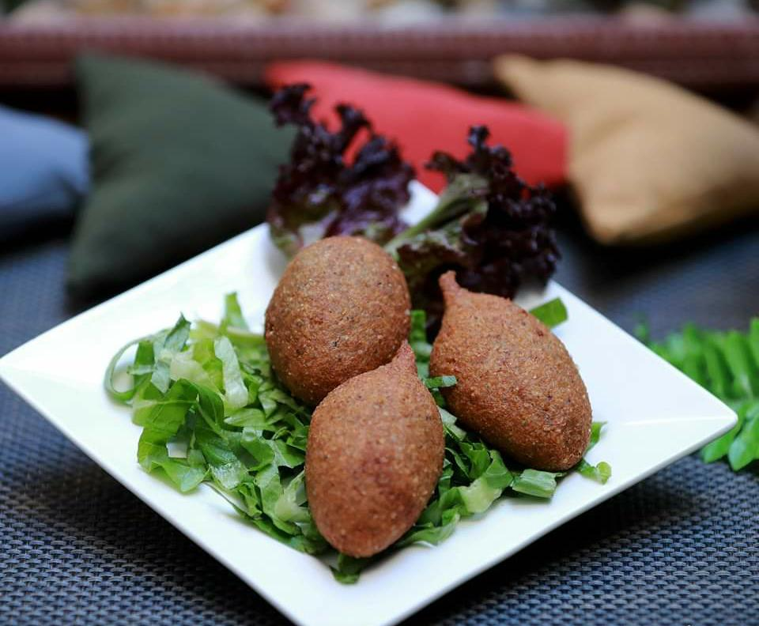
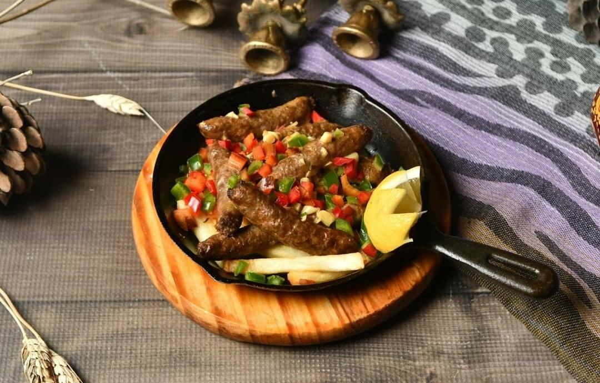
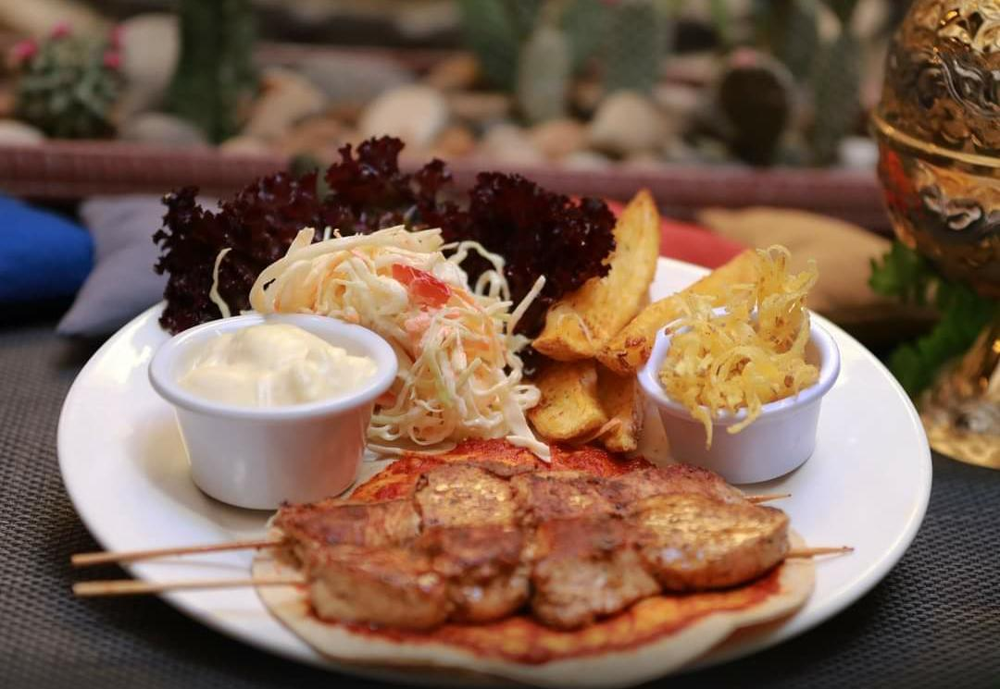
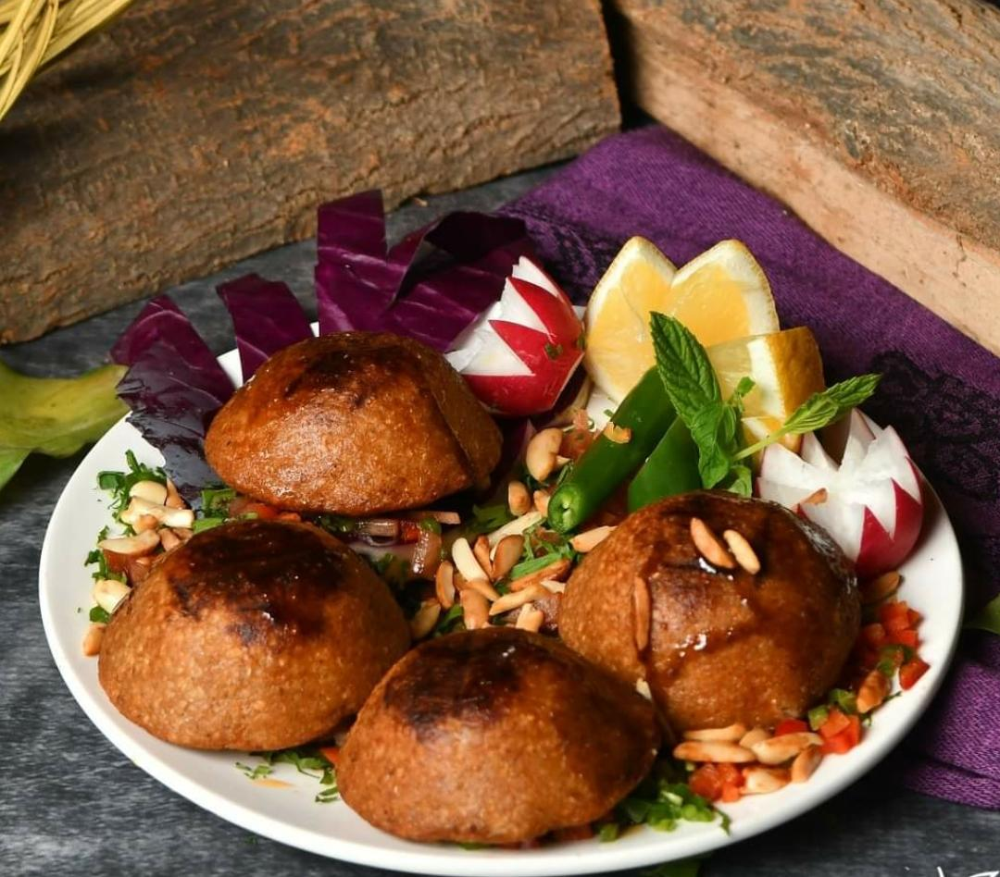
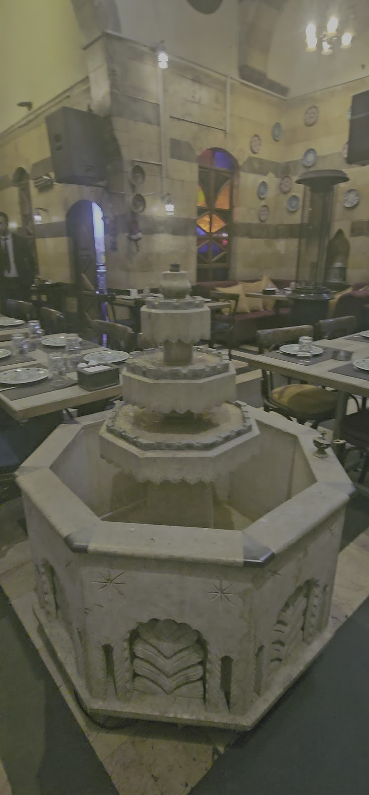

"ورّاق الزمن" — كاتب أوراق الأيام. بيت شامي عتيق ببـاب توما صار مطعماً، وكل طبق بيطلع من مطبخه صفحة من دفتر الشام.The "scribe of time" — keeper of the days' pages. An old Damascene house in Bab Touma turned restaurant, where every plate leaves the kitchen like a page from the city's notebook.
بحواري باب توما، بين البيوت اللي حيطانها بتحكي، في بيت دمشقي قديم فتح بابه للسفرة: قناطر حجر، بحرة بنص الدار، وطاولات مرتّبة تحت القوس العتيق. الاسم مش صدفة — الورّاق هو اللي كان ينسخ الكتب ويحفظ الحكايات، ونحنا منحفظ حكاية الشام بصحونها.In the lanes of Bab Touma, among houses whose walls do the talking, an old Damascene home opened its door to the table: stone arches, a fountain in the courtyard, tables set beneath the ancient vault. The name is no accident — the warraq was the scribe who copied books and kept the stories, and we keep the story of Damascus in its plates.
المطبخ بياخد وقته: كبب مدقوقة على أصولها، فتّة بتوصل بمقلايتها وهي بتغلي، ومشاوي مع صحون المقبلات حواليها. وضيوفنا بيكتبوا بالدفتر نفس السطر — أكل طيب، تقديم حلو، وناس بتخدم من قلبها.The kitchen takes its time: kibbeh pounded the proper way, fatteh arriving in its skillet still bubbling, grills ringed with plates of mezze. And our guests keep writing the same line in the notebook — good food, lovely presentation, people who serve from the heart.


مدقوقة ومحشية ومرتّبة عالصحن متل سطور — كل نوع صفحة لحاله.Pounded, stuffed, arranged on the plate like lines of script — each kind a page of its own.

بتوصل عالطاولة وهي بعدها بتغلي — سموا عليها قبل ما تبرد.It lands on the table still bubbling — say bismillah before it cools.

أسياخ عالفحم، بطاطا، وصحون تغميس بتكمّل الحلقة حواليها.Skewers off the coals, fries, and dipping plates closing the circle around them.


"Good food, lovely atmosphere and great service from a very friendly staff."
"Old house in ancient Damascus made into a good restaurant. Great service and the food was excellent."
"Beautiful experience, nice presentation and great workers."
★ 4.3 / 5 — 31 تقييم على غوغلGoogle reviews
| يومياًDaily | 9:00 — 1:00 بعد منتصف الليلafter midnight |
من فطور الصبح لسهرة ما بعد النص — سبعة أيام بالأسبوع.From breakfast to well past midnight — seven days a week.
باب توما، دمشق القديمة
للحجز وعزايم العيلة، اتصلوا علىFor bookings and family gatherings, call 011 543 2526
اتصلوا فيناCall us افتحوا الخريطةOpen in Maps